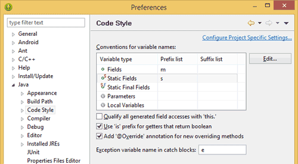
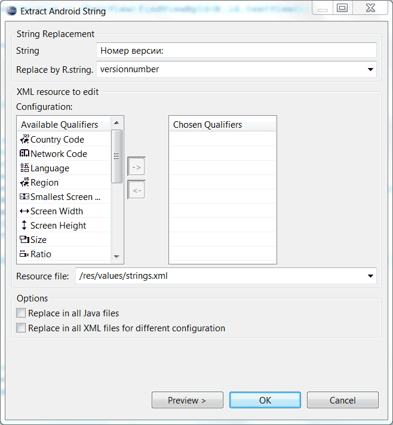

/* Моя кошка замечательно разбирается в программировании. Стоит мне объяснить проблему ей - и все становится ясно. */
John Robbins, Debugging Applications, Microsoft Press, 2000

/* Моя кошка замечательно разбирается в программировании. Стоит мне объяснить проблему ей - и все становится ясно. */
John Robbins, Debugging Applications, Microsoft Press, 2000
Генерирование get/set-методов с использованием стилей Android
Подключаем исходники Android
Проверка имени метода
Открываем окно редактора кода на всё окно
Одновременный просмотр кода из двух файлов
Одновременный просмотр двух разных фрагментов кода из одного файла
Управляем вкладками
Используем функцию автозаполнения
Заменяем строки в коде строковыми ресурсами
Извлечь локальную переменную
Быстрые клавиши
Не получается установить Android ADT 21.1 на Eclipse Juno (Windows 7) после обновления SDK 21.1? Я сам столкнулся с этой проблемой на другой машине. Решение есть здесь. Вкратце - снимите флажок с пункта Contact all update sites during install to find required software
Eclipse позволяет быстро сгенерировать get/set-методы через Source | Generate Getters and Setters.... Можно доработать данную настройку. В Android принято закрытым переменным класса (полям) давать префикс m, а статическим полям - префикс s. Идём в меню Windows | Preferences и в левой панели выбираем Java | Code Style. В таблице Conventions for variable names выбираем строчку Fields и нажимаем кнопку Edit.... В диалоговом окне у поля Prefix list добавляем префик m. По аналогии добавляем префикс s для строчки Static Fields.

Теперь, если вы создадите новый класс с закрытыми и статическими переменными и сгенерируете get/set-методы, то у вас сразу появятся нужные заготовки. А префикс в настройках нужен был для того, чтобы, к примеру, у нас не получилось некрасивых имён:
class Cat {
private int mCatSize;
public Cat() {
mCatSize = 3;
}
public int getCatSize{
// а не getMCatSize()
}
public void setCatSize(int catSize) {
// а не setMCatSize
mCatSize = catSize;
}
}
Скачайте исходные коды Android через Android SDK Manager, выбрав Sources for Android SDK.

Исходники хранятся по адресу path_to_android_sdk/sources/android-xx, где xx версия API, например 17 для Android 4.2.
Подключите исходники к вашему файлу android.jar из вашего проекта, щелкнув правой кнопкой на данном файле в Package Explorer и выбрав пункт Properties → Java Source Attachment. Выберите External location и нажмите кнопку External Folder. Перейдите в папку path_to_android_sdk/sources/android-xx и нажмите кнопку OK.

Теперь вы можете просматривать исходники Android (источник).
Когда вы набираете в коде имя метода, то обращайте внимание на знаки, которые появляются слева от него. Если имя метода набрано правильно, то появится треугольник (закрашенный, если в базовом классе есть его реализация, не закрашенный - если он абстрактный или принадлежит интерфейсу). Таким образом вы можете быстро обнаружить ошибку, если вместо onCreate напишите OnCreate.
В Eclipse очень много различных панелей и вкладок, которые уменьшают полезную площадь редактора кода. Не беда. Дважды щёлкните по вкладке исходного файла, который вы редактируете. Редактор развернётся на всё окно! Чтобы вернуться в прежний режим - снова сделайте двойной щелчок на вкладке.
Иногда хочется одновременно видеть две открытые вкладки с кодом. Щелкните на вкладке с исходным кодом и, удерживая кнопку мыши, перетащите вкладку к любому краю редактора. Вы увидите тёмный контур будущего расположения вкладки - либо бок о бок с другим файлов, либо выше или ниже другого файла. Когда вы отпустите кнопку мыши, будет создано новое окно редактора, в которое можно перетаскивать другие вкладки файлов.
Если код очень длинный, то возникает желание просматривать разные фрагменты кода из одного файла, не гоняя прокрутку туда-сюда. Щелкните правой кнопкой мыши по вкладке нужного файла и в контекстном меню выберите команду New Editor. У вас появится вторая вкладка для этого же файла. Теперь вы можете разместить эти вкладки рядом (смотри предыдущий пример).
Иногда, кажется, что в Eclipse открыто слишком много вкладок, которые совсем не нужны сейчас. Закрывать их по одному слишком утомительно. Щёлкните правой кнопкой мыши по вкладке и выберите команду Close Others, чтобы закрыть все вкладки, кроме выбранного файла. Кстати, отдельные вкладки можно закрывать не только через крестик, но и с помощью щелчка средней кнопки мыши (как в браузерах, а что, вы не знали?). Еще можно покопаться в настройках Eclipse и задать количество открытых вкладок.
Автозаполнение помогает экономить время в процессе ввода текста, а также не держать в голове названия сотен методов и свойств. Наберите первые символы кода, а затем нажмите комбинацию Ctrl+Пробел. Если есть переменные, класс, метод и другие операторы, начинающие с этих символов, то Eclipse сразу подставит нужный вариант. Если вариантов несколько, то вы сможете выбрать нужный самостоятельно.
Как известно, при разработке приложений в коде рекомендуются использовать не строки, а строковые ресурсы. В Eclipse существует быстрый и удобный способ извлечения строк из Java-кода и размещения его в ресурсах. Предположим у нас есть следующий код (взято из моего учебного примера):
textVersion.setText("Номер версии: " + getVersionCode());
Выделяем строку Номер версии: (без кавычек), далее в меню выбираем Refactor | Android | Extract Android String…. Появляется диалоговое окно.

В первом текстовом поле будет находиться ваша выделенная строка, а ниже нужно прописать имя для строкового ресурса, например, versionnumber. Когда вы нажмете OK, то произодет автоматическая замена строк. Даже сохранять ничего не придется. Таким образом вы может быстро пройтись по вашему коду и исправить все строки.
Когда проект будет готов, возникает желание причесать его код. Например, в коде могут постоянно встречаться одинаковые фрагменты:
TextView nameCat = new TextView(this);
nameCat.setTextColor(getResources().getColor(R.color.cat));
Выделите выражение getResources().getColor(R.color.cat), щёлкните правой кнопкой мыши и в контекстном меню выберите команду Refactor | Extract Local Variable. В открывшемся окне введите имя переменной и нажмите OK (не сбрасывая флажок Replace All Occurences). Это уменьшит одинаковые участки кода. Также можно извлекать методы, константы и др.
Список всех горячих клавиш в Eclipse вы всегда можете посмотреть через комбинацию CTRL + SHIFT + L. Ниже приведены только часть из них.
Можно быстро удалить лишнюю строчку кода при помощи комбинации клавиш Ctrl+D. Это гораздо быстрее, чем выделять всю строку и нажимать Delete.
Переместить строку или выделенный участок текста можно через Alt+Стрелка Вверх/Вниз. Причём строки будут иметь правильные отступы во время перемещения.
Комбинация ALT + SHIFT + Стрелка Вверх позволяет выделять логические блоки кода. Например, блок цикла, далее блок метода, класса и т.д. Удобно, когда надо быстро скопировать нужный блок или просто его увидеть. Стрелка Вниз делает в обратном порядке.
Комбинация клавиш Ctrl + ALT + Стрелка Вниз позволяет скопировать строку и вставить её ниже (стрелка Вверх копирует выше). Быстрее, чем обычный вариант Копировать+Вставить.
Если у вас открыто слишком много вкладок с кодом, то с помощью комбинации CTRL+E можно быстро открыть список всех вкладок и выбрать нужный редактор.
Переключается между вкладками. По сути это медленный аналог Ctrl + E (см. выше). Способ удобен при переменной переключении между двумя вкладками.
Подобный поиск знаком пользователям Firefox. Выводит результат во время набора текста. Когда нажмёте указанную комбинацию, то вроде ничего не произойдёт. Не обращайте внимания, начинайте набирать текст и подходящий текст будет показан. Поиск идёт после текущей позиции курсора.
Установите курсор на названии переменной и нажмите F3, чтобы переместиться на место, где эта переменная была объявлена. Аналогично, можно нажать клавишу Ctrl и щелкнуть мышкой по имени переменной.
Возвращает на последнюю редактируемую строчку. Полезно, когда вас отвлёк босс, телефонный звонок, мяукающий кот.
Позволяет быстро написать строчку с объявлением класса. Например, наберите new TextView() и нажмите Ctrl + 2, а затем L. Получится:
TextView textView = new TextView();
У меня почему-то клавиша L не всегда срабатывает, поэтому я выбираю вариант мышкой из всплывающего окна. Удобнее, чем использовать Ctrl + Пробел. Также есть варианты с F и R.
Несколько полезных шаблонов для Android-разработки под Eclipse